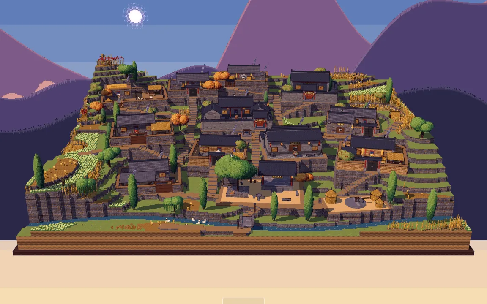
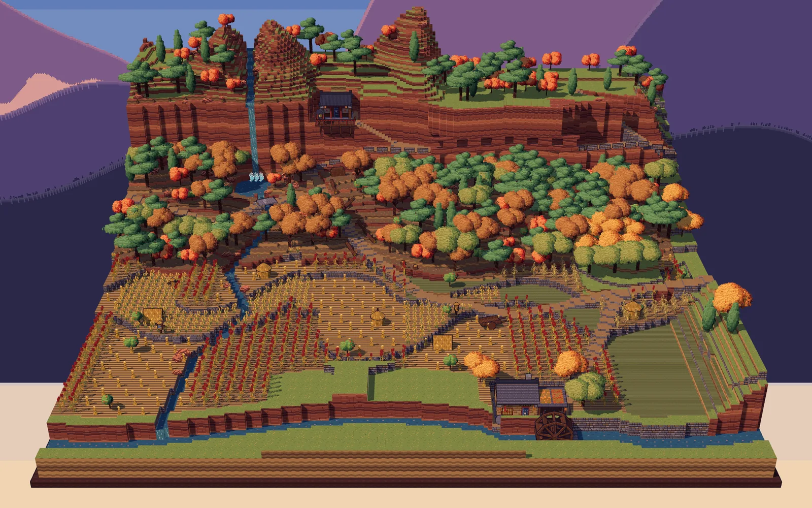
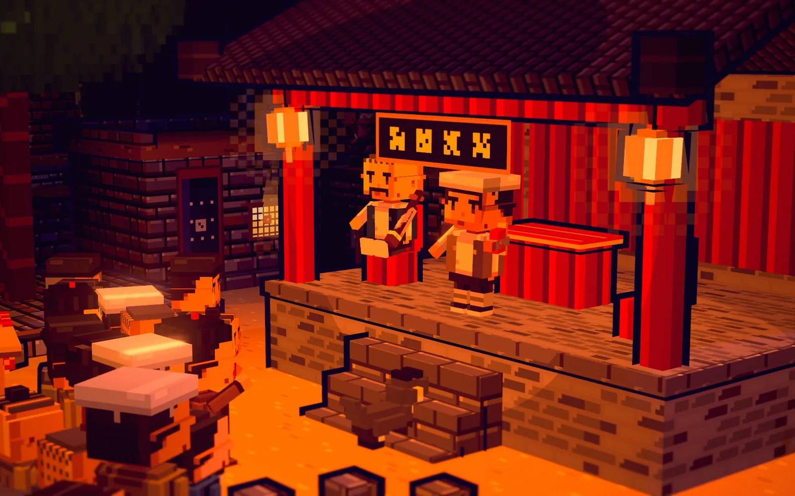
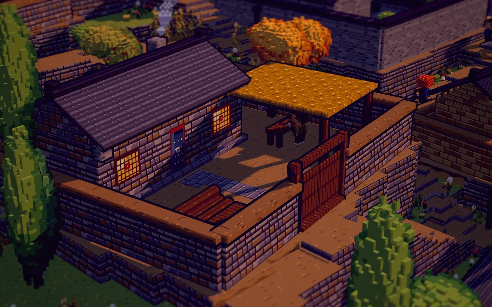
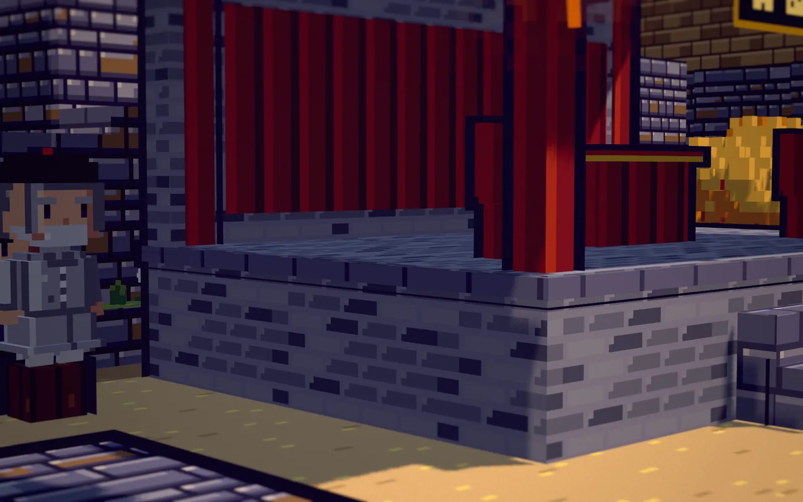
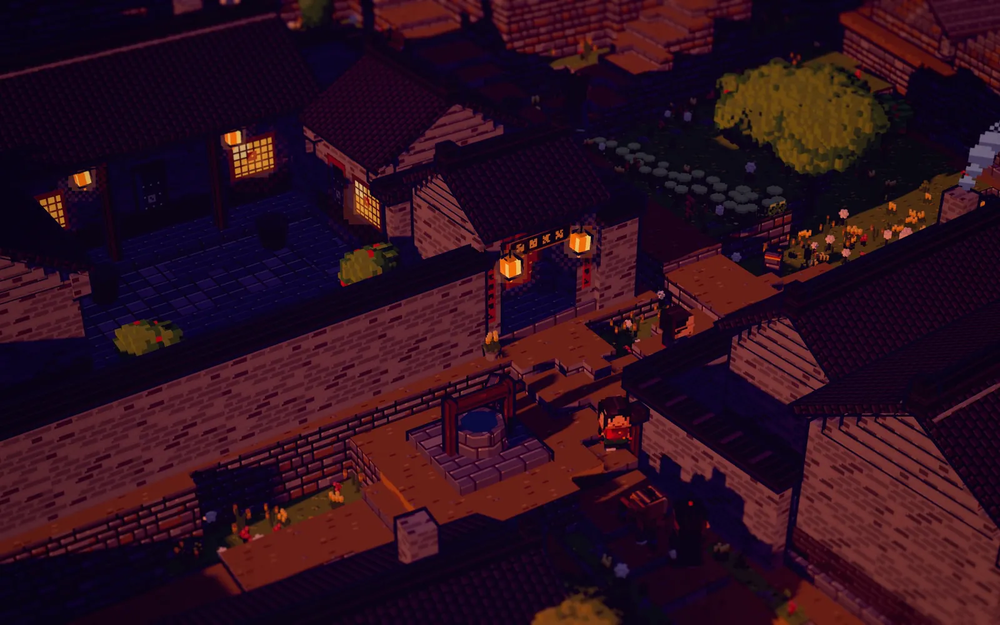
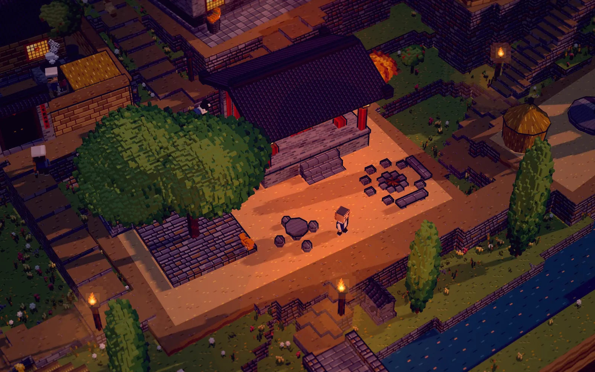

Shiyu Negatives
A stone village in the Taihang Mountains as a 2.5D pixel-art voxel diorama: 28 villagers with their own trades, families and schedules live out a full day, from breakfast smoke at dawn to the night watchman's last round.
Project Overview
Shiyu is a fictional stone village in the Taihang Mountains of northern China at harvest time. Courtyards sit on terraces that follow the contour lines, stone-stepped lanes wind between them, and an arched bridge crosses the stream. Twenty-eight voxel villagers and dozens of animals live there. Nobody is scripted shot by shot: each villager has a trade, a home, friends and a daily schedule, and the village runs on its own. You can sit and watch it like a miniature, or pick out one person and follow them through the day. It is a plain three.js page with no build step; on a PC it runs in the browser, and the same page enters WebXR on smart glasses.
A Day in the Village
Daily life: the village clock runs a full day at uneven speeds (slow during daytime work, fast through the night). Wives cook breakfast before dawn and feed the chickens, the tofu mill starts grinding at four, the children go to school, the shepherd drives his flock up the hill, and at noon and dusk families eat from their bowls on their own doorsteps.
Village events: one event a day in rotation: an opera on the stage, a market, a bonfire with storytelling, threshing, an open-air film, an offering at the earth-god shrine and a village meeting. Villagers with roles arrive early to set up; everyone else decides whether to go based on age, role and taste, and takes one place each, filling the rings from the inside out.
Calendar and weather: a lunar calendar (market on days ending in 5 and 0), sun, cloud and rain fixed per day, and four seasons that change crops, foliage, snow and festival decorations while keeping every tree and stone in place.
Second scene: west of the village, the West Gully adds a red sandstone cliff, a road carved into the cliff face, a cliffside shrine, a waterfall and a working watermill whose gears visibly drive the millstone. Villagers walk there to farm, cut wood and grind flour.
How It's Built
Villagers walk a 0.25 m navigation grid with A*: they overtake slower walkers, pass oncoming people on the outside, ask someone standing in the way to step aside, and push courtyard gates open and closed. Animals respond to people: chickens gather at feeding time, the ox follows to the threshing floor, dogs and pigs nose gates open but never close them. Characters are carved from procedurally drawn front, side and back views into voxels, with limbs and tools on separate joints. Because EffectComposer does not work in WebXR and screen-space pixelation shimmers in stereo, all pixelation, colour grading and glow are done in materials and geometry instead. Static houses are merged into about 60 draw calls, and greedy voxel meshing cut a villager from 100k to 20k faces. A build-time audit checks for floating props, unreachable doors, broken paths and z-fighting (657 coplanar faces found and fixed), and a seeded headless simulation reports collisions and how long people stand waiting for each other.
In XR
On a PC the page runs in Chrome and enters XR through OpenXR on VITURE glasses. The diorama appears about a metre in front of you, below eye level. Grab it with both hands to move, turn or pull it closer; a quick double pinch slides it back in front of you. A single pinch selects a villager, animal or object and opens the same pixel-art info card as on the web, floating above it and facing you. Ray hits use a BVH (one test went from 15 ms to 0.5 ms). The background is black so that it is transparent on optical see-through glasses.
Gallery






